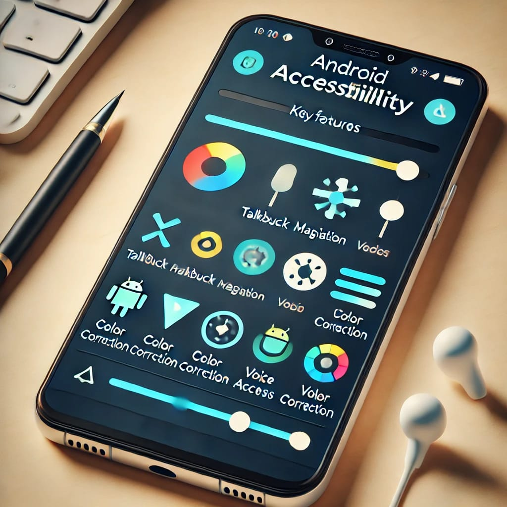
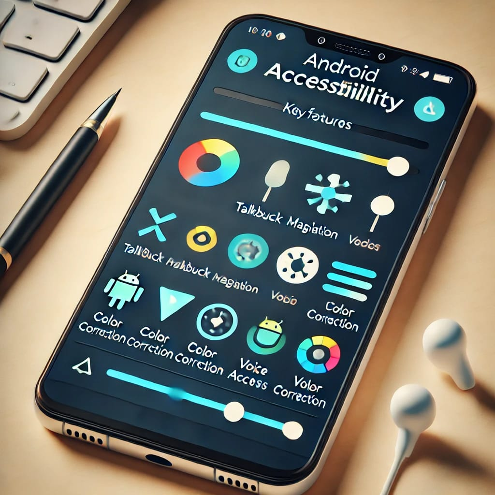

Explained about the Accessibility seetings, which helps them from the maintainance of the Android Mobile.
Android phones offer a variety of accessibility settings designed to make devices more usable for people with disabilities or specific needs. These settings enhance interaction with the device through visual, auditory, and touch-based adjustments. Below is a detailed explanation of the main accessibility features available on most Android phones:
1. Screen Reader (TalkBack)
- TalkBack is a screen reader feature that provides spoken feedback to help visually impaired users navigate their device. It reads out loud what’s on the screen, including icons, buttons, and text.
- Gesture Navigation: Users can navigate the phone using gestures. For example, swiping left or right moves between items, and double-tapping selects an item.
- BrailleBack: This complements TalkBack by allowing users to connect a refreshable braille display via Bluetooth, providing braille output for on-screen content.
2. Magnification
- Magnification Gestures: This feature lets users zoom in on parts of the screen by triple-tapping. After zooming in, you can pan around by dragging two fingers across the screen.
- Magnification Shortcut: A more recent update includes a magnification shortcut, which allows users to quickly activate magnification by tapping an accessibility button or using a specific gesture.
3. Font and Display Size Adjustments
- Font Size: Users can adjust the text size across the entire device, making text easier to read without the need for magnification.
- Display Size: Similar to font size, this feature lets users increase or decrease the size of on-screen elements, making buttons, icons, and other UI components larger or smaller.
4. Color Adjustments
- Color Correction: This setting is for people with color blindness. It allows the display to be adjusted to make colors easier to distinguish, with options for Deuteranomaly (red-green), Protanomaly (red-green), and Tritanomaly (blue-yellow) color blindness.
- Color Inversion: This feature inverts the colors on the screen, which can make text easier to read for some users with low vision or specific visual conditions.
5. Interaction Controls
- Switch Access: Switch Access allows users to control their device using one or more switches instead of the touchscreen. This feature is especially useful for users with mobility impairments. The switches can be configured to scan items on the screen and select them.
- Assistant Menu: This provides an on-screen menu of common functions (like volume control, home button, and notifications) for users who have difficulty using physical buttons.
- Touch and Hold Delay: This setting adjusts the amount of time required to touch and hold an item before an action occurs, helping users with motor impairments.
- Time to Take Action (Accessibility Timeout): This allows users to extend the amount of time the device takes to respond to specific actions, such as dialog boxes.

6. Hearing Enhancements
- Sound Amplifier: This app (sometimes pre-installed or available via Google Play) enhances and amplifies sounds around you or on your device. Users can adjust the sound to focus on specific frequencies or reduce background noise.
- Hearing Aid Compatibility: Many Android devices offer compatibility with hearing aids, allowing users to pair their hearing aids directly with the phone.
- Mono Audio: This merges stereo sound into a single mono stream, which is beneficial for users who are deaf in one ear.
- Subtitles and Captions: Users can enable captions for videos, where available, and adjust caption settings such as text size and color.
7. Voice Access
- Voice Access: This feature allows users to control their device entirely through voice commands. Users can navigate between apps, edit text, and interact with on-screen elements using spoken commands.
- Google Assistant Integration: While not strictly an accessibility feature, Google Assistant can also perform many tasks via voice commands, making it easier for users with physical impairments to interact with their device.
8. Accessibility Shortcuts
- Accessibility Menu: This provides a large on-screen menu to control basic device functions like volume, lock screen, screenshots, and more.
- Accessibility Shortcut: Users can set up a shortcut (usually by holding down the volume buttons) to quickly turn on or off specific accessibility features like TalkBack, Magnification, or Color Inversion.
9. Other Useful Features
- Power Button Ends Call: This setting allows users to end calls by pressing the power button, which can be easier than tapping the on-screen button.
- Vibration Feedback: Users can enable vibration feedback for various on-screen actions, providing an additional sensory input that can help with navigation.
- Live Transcribe: This is an app that provides real-time transcription of spoken words, which is useful for users who are deaf or hard of hearing.
- Select to Speak: Users can tap specific items on the screen to have them read aloud, which is a simpler alternative to using a full screen reader like TalkBack.
10. Third-Party Apps
- Android also supports a wide range of third-party accessibility apps that can be downloaded from the Google Play Store, further enhancing the device's usability for individuals with specific needs.
Customization and Settings Users can access these features by navigating to Settings > Accessibility on their Android device. Depending on the version of Android and the device manufacturer, the exact menu structure may vary slightly, but the core features are typically the same across most Android devices. These accessibility settings help ensure that Android devices are adaptable to the needs of a wide range of users, making technology more inclusive.
 
